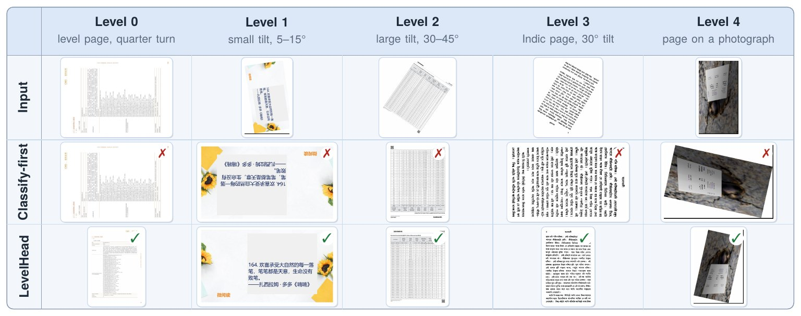
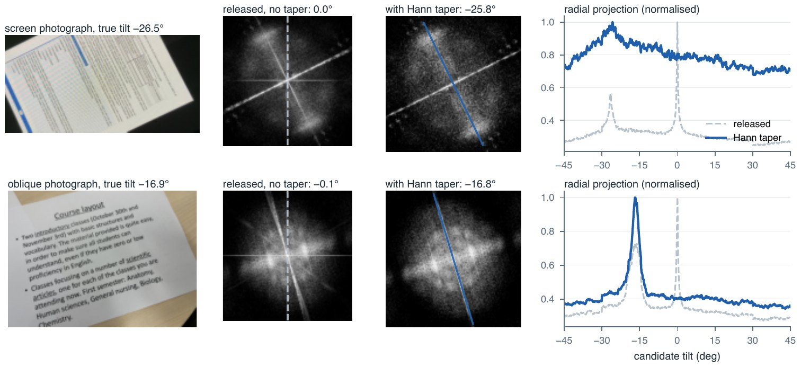

Deskew before you classify
Document pipelines pick a page's quarter turn first and remove its tilt second. Orientation models are trained on level pages, so a tilted page fools them before the deskewer ever runs. LevelHead swaps the order: level the page, then let any frozen model vote over the four quarter turns of the level page.
One split, three steps
Any angle splits as θ = 90°·k + s. Rows of text reveal the tilt s and look the same after a quarter turn; the shapes of letters reveal k. So each part goes to the tool that can read it.
A spectral deskewer reads s modulo 90°. A Hann taper before the FFT lets it read photographs, where the released code returns 0°.
The frozen backbone, CNN or VLM, sees the level page in its four quarter turns.
Each answer is read at its own offset and the four are multiplied. A fixed preference for one answer cancels out.
Accuracy against tilt
Same backbone, same deskewer, same four-view vote; only the order of the two steps differs. Pick a backbone.
Order and vote need each other
Pages at any angle, averaged per backbone.
A deskewer that reads photographs
Images left more than 15° off. Lower is better.
Every backbone improves
Accuracy (%) within 15°, averaged over ODB-4, ORB SROIE, SynthDoG and Indic-4 (quarter turns) and ODB-any, En-12 and Indic-8 (any angle).
| Backbone | Classify-first | LevelHead | ODB-any, CF → LH |
|---|
At any angle, only levelling closes the gap
Classify-first / + vote / LevelHead. At quarter turns the vote alone is enough.
| Backbone | Phones, quarter turns | Phones, any angle | DISE scans, any angle |
|---|---|---|---|
| docTR | 85.8 / 88.8 / 88.5 | 72.6 / 75.7 / 86.1 | 68.7 / 70.9 / 88.2 |
| PP-LCNet | 98.3 / 98.4 / 98.3 | 69.9 / 75.0 / 97.0 | 55.1 / 58.4 / 95.7 |
| Swin-T | 82.4 / 89.2 / 89.0 | 66.8 / 77.3 / 89.1 | 63.4 / 77.8 / 92.7 |
| BEiT-B | 86.1 / 90.2 / 90.0 | 68.0 / 76.5 / 87.0 | 72.9 / 81.8 / 88.8 |



Wrap any orientation model
A backbone is any function from images to four probabilities. CNNs, ViTs, OCR page classifiers and VLMs with letter probabilities all work.
pip install "levelhead[hf] @ git+https://github.com/beingamanforever/LevelHead"
from PIL import Image
from levelhead import LevelHead
from levelhead.backbones import HFOrientationClassifier
lh = LevelHead(HFOrientationClassifier()) # Swin-T orientation classifier
pred = lh.predict(Image.open("scan.jpg"))
print(pred.angle, pred.tilt, pred.posterior) # clockwise angle, tilt, P(0/90/180/270)
lh.correct(Image.open("scan.jpg")).save("upright.jpg")